Hershey's (美國)
美國巧克力象徵，以 Kisses 水滴造型聞名世界。
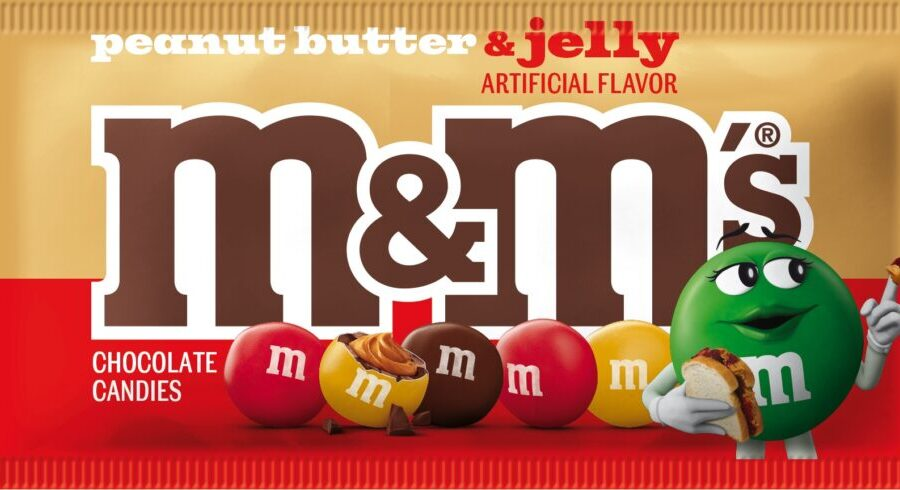
Mars 瑪氏 (美國)
全球食品巨頭，旗下擁有名震全球的士力架 (Snickers) 及 M&M's。
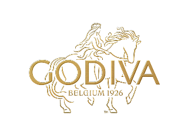
Godiva (比利時)
比利時皇家御用品牌，奢華夾心巧克力的全球代表。
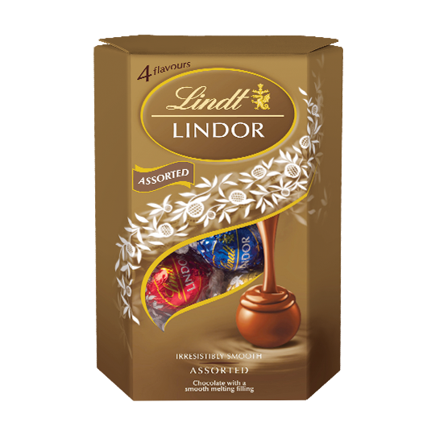
瑞士蓮 (瑞士)
瑞士國寶級品牌，以獨創技術打造 LINDOR 入口即化的口感。
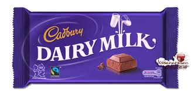
吉百利 (英國)
英國百年經典，以 Dairy Milk 牛奶巧克力系列聞名。
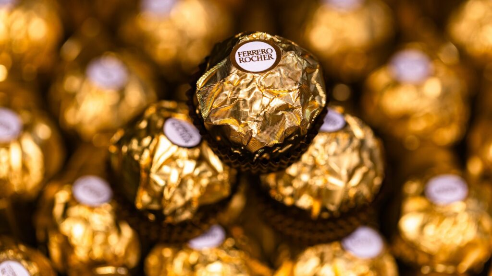
費列羅 (義大利)
義大利之光，經典「金沙」榛果巧克力享譽全球。
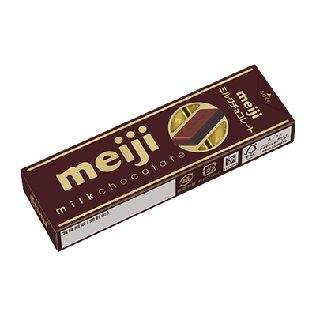
明治 (日本)
日本巧克力代表，品質穩定且多樣化，深受亞洲歡迎。

法芙娜 (法國)
頂級巧克力原料供應商，深受米其林星級主廚推崇。
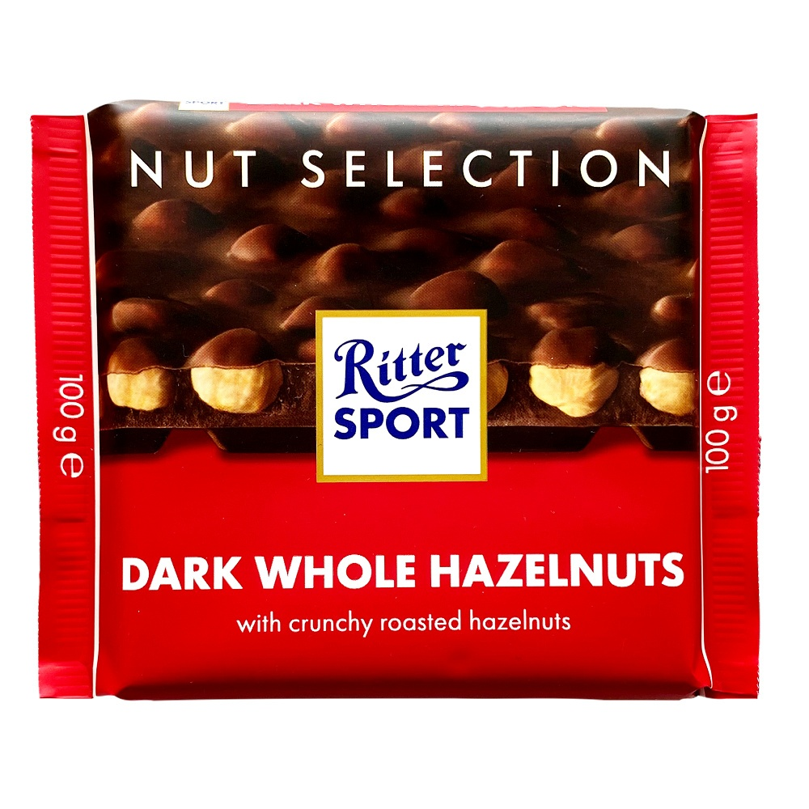
Ritter Sport (德國)
德國方塊巧克力，彩色包裝與豐富配料為其主要特色。

Mirabell (奧地利)
正宗奧地利莫札特巧克力球，內含香醇杏仁膏與夾心。

Pocky (日本)
全球知名的巧克力棒，其獨特的點心形式已成為流行文化符號。

Tim Tam (澳洲)
澳洲國民巧克力夾心餅乾，以其獨特的 Tim Tam Slam 吃法聞名。
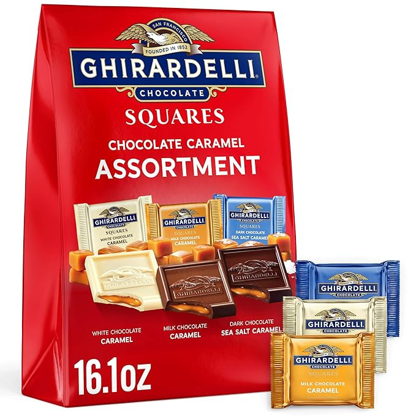
Ghirardelli (美國)
創立於舊金山，是美國歷史最悠久的巧克力製造商之一，以片裝巧克力著稱。
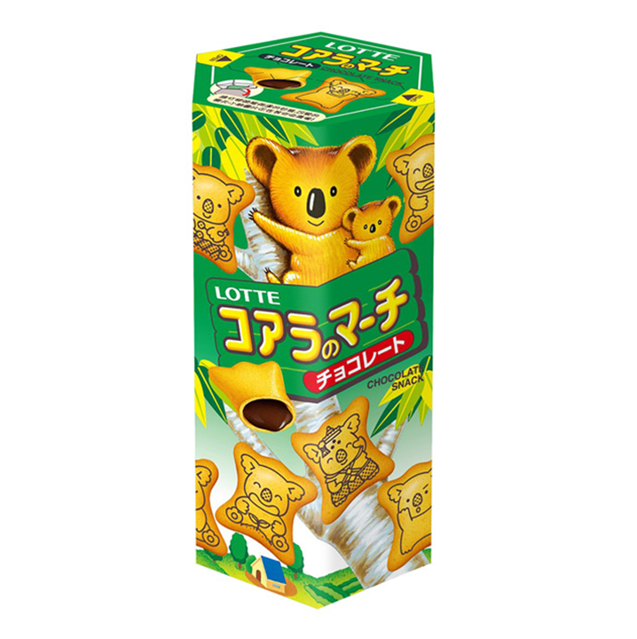
樂天 Lotte (韓國)
韓國食品巨頭，旗下的「巧克力派 (Choco Pie)」及 Crunky 系列廣受好評。
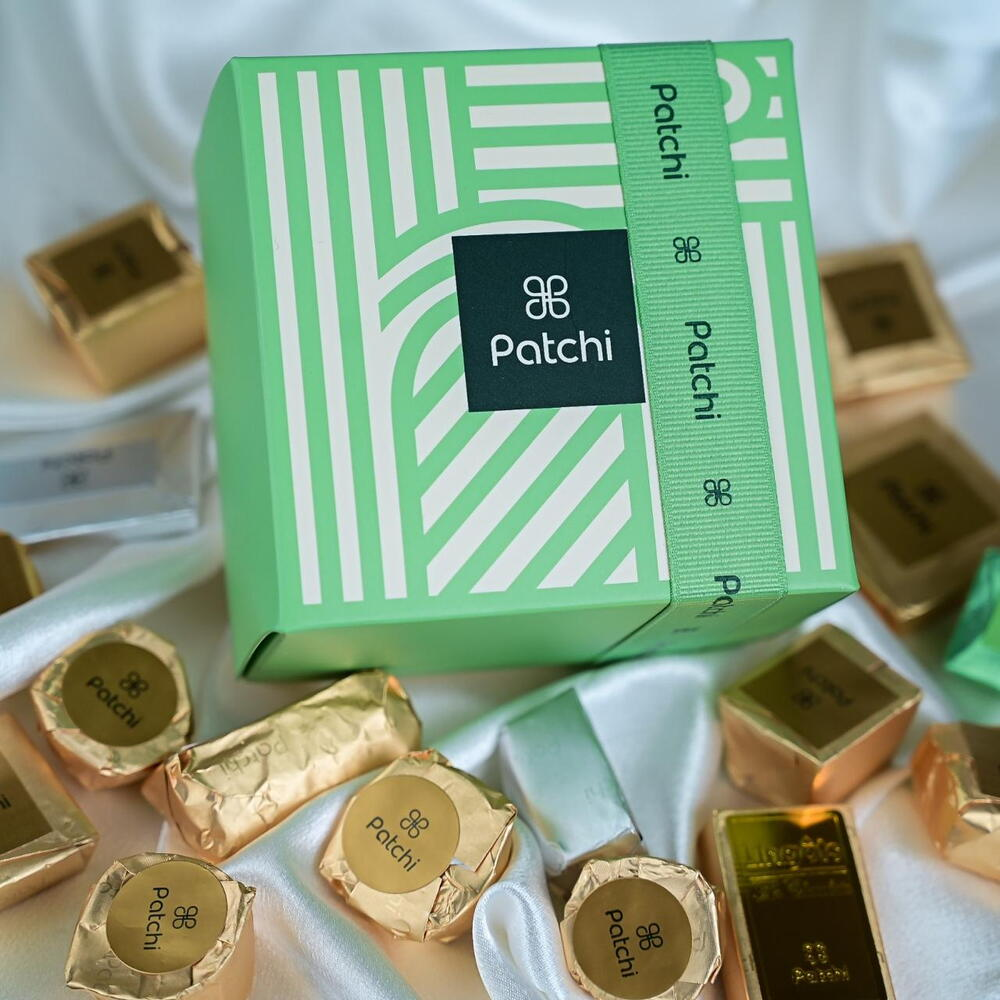
Patchi (黎巴嫩)
中東高端巧克力名牌，有「巧克力界的愛馬仕」美譽。
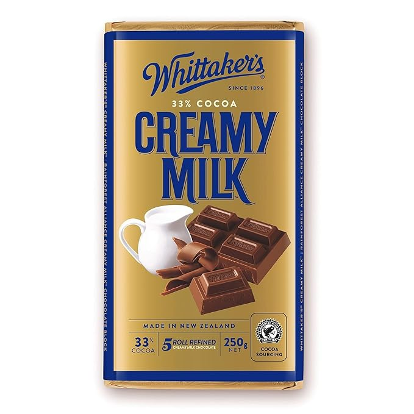
Whittaker's (紐西蘭)
紐西蘭國寶品牌，堅持「Bean to Bar」的職人品質。